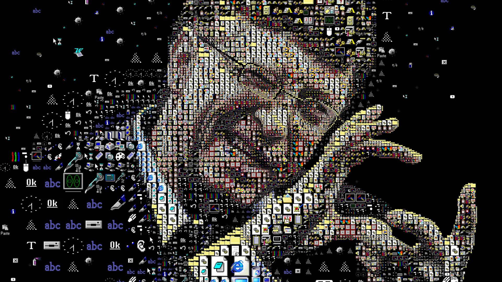

Bill Gates
Owner of Microsoft

Bill Gates with different small creations of him. He is much pasionate regarding technology. He is the richest person of the world. He has the total worth of $103 Billion
-
Here is a timeline of Bill Gates life
- Born on October 28, 1955 in Seattle, Washington
- 1967 Goes to Lakeside School. He meets friend Paul Allen.
- 1973 Enrolls at Harvard University
- 1975 Drops out of school. Paul & Bill start Microsoft
- 1980 Microsoft signs important deal with IBM
- 1988 Paul Allen leaves Microsoft
- 1994 Bill Marries Melinda French, a Microsoft employee, on the island of Hawaii.
- 2000 Bill starts the Bill and Melinda Gates Foundation
- 2007 Gets an honorary degree from Harvard